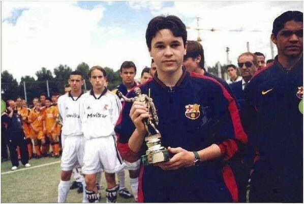
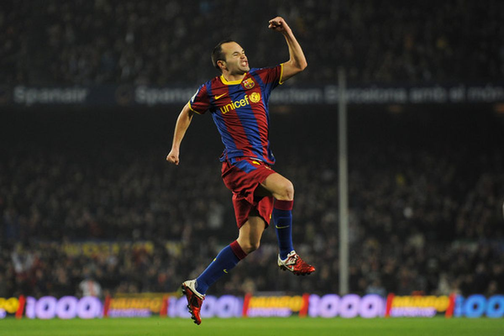
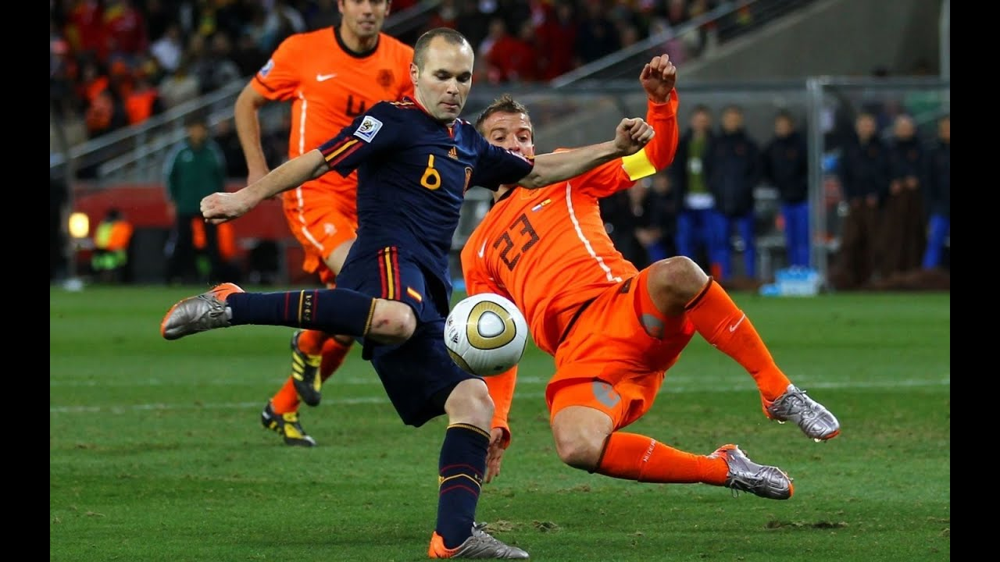
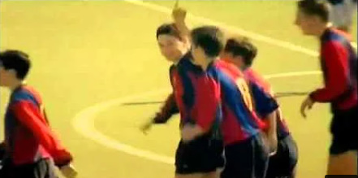
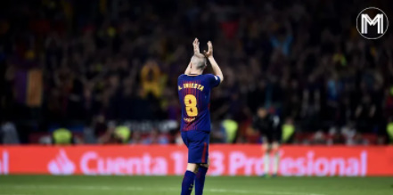

Andrés Iniesta
Profesionalni španjolski nogometaš
  
Rani život
Iniesta je rođen u malom selu u provinciji Albacete, Španjolska. Počeo je igrati za Albacete u dobi od 8 godina, a s 12 je primjećen od vodećih klupskih skautova. Iniestina obitelj je bila povezana s FC Barcelonom pa je bio upisan u njihovu nogometnu školu, La Masiu. Njegove nogometne sposobnosti su mu omogućile da se izdvoji od ostalih, na poziciji veznog igrača. Tijekom treće sezone igranja za Barcelonu B, Iniesta je pozvan u prvu ekipu 21. prosinca 2002, za ligašku utakmicu protiv Mallorce. 
Klupska karijera i uspjesi
Naposljetku, pridruživši se glavnoj momčadi Barcelone, Andrés je debitirao 2004., a u svojoj prvoj sezoni za njih propustio je samo jednu utakmicu za svoju momčad. Zabio je dvaput i odigrao veliku ulogu u Barceloninom osvajanju La Lige. Budući da je bio vezni igrač, njegova se uloga manje odnosila na postizanje golova, a više na obranu. U sezoni 2006–2007 Andrés je svojim briljantnim nastupima dokazao da je savršen za svaku poziciju. Bio je kapetan svoje momčadi u predsezoni i pomogao svojoj momčadi da osvoji Joan Gamper trofej. 2008. godine, usred glasina o transferu, potpisao je još jedan ugovor s Barcelonom, što je značilo da će biti s timom do 2014. godine. U sezoni 2008-2009, Andrés je bio na vrhuncu svoje karijere i često je dobio ovacije, ne samo od svoje domaće publike u Barceloni, već i od svojih suparnika. U polufinalu Lige Prvaka 2009. protiv Chelseaja zabio je gol u posljednjoj minuti, da bi povukao utakmicu u remi. Momčad je stigla do finala i pobijedila Manchester United i podigla trofej. Nakon turnira, napadač Manchester Uniteda Wayne Rooney izjavio je kako vjeruje da je Andrés najbolji igrač svijeta. Andrés je kasnije ocijenjen kao najkonstantniji igrač lige i ostvario je peto mjesto na listi FIFA-inog igrača godine 2009. Iako je veći dio sezone ostao ozlijeđen, nije propustio niti jednu ključnu utakmicu. U sezoni 2010. – 2011. bio je drugoplasirani u utrci za nagradu Ballon d'Or, a 2012. osvojio je treće mjesto. U sezoni 2011.-2012. zabio je u ključnim utakmicama, kako bi pomogao Barceloni da osvoji naslov Supercopa de España. U La Ligi 2011. vodio je Barcelonu jer je klub otišao u rekordni niz od 51 utakmice bez poraza. U Ligi prvaka 2012. zabio je u četvrtfinalu i polufinalu, ali nije mogao spasiti svoju momčad od ispadanja u polufinalnoj utakmici protiv Chelseaja. Godine 2013. potpisao je još jedan ugovor s Barcelonom, na pet godina, a sljedeće godine postao je kapetan. U finalu UEFA Lige prvaka 2015. postigao je pobjednički gol i proglašen je igračem utakmice. Barcelona je postala prvi klub ikada koji je osvojio trostruku krunu domaće lige, Ligu prvaka, Kup, i domaći kup, dva puta. Andrés je bio jedan od sedam igrača Barcelone koji su bili dio te slavne momčadi. Spremna ga zadržati zauvijek, Barcelona je potpisala ugovor s Andrésom u kojem je navedeno da će ga zadržati do kraja njegove karijere. Naposlijetku je ipak odlučio otići iz Barcelone jer je osjećao da više ne može igrati na najvišoj razini i prešao je u redove japanskog Vissel Kobea. 
Reprezentativna karijera
Na međunarodnom planu, Andrés je bio dio španjolske nacionalne momčadi od početka stoljeća. 2001. godine pomogao je svojoj momčadi da osvoji UEFA Europsko prvenstvo do 16 godina. Također je pomogao svojoj reprezentaciji da osvoji Europsko prvenstvo do 19 godina. 2003. godine bio je ključni dio momčadi koja je stigla do finala FIFA Svjetskog prvenstva za mlade, ali je ispala u finalu. Uvršten je u FIFA All-Star tim na kraju turnira. Na opće iznenađenje, pozvan je za španjolsku reprezentaciju na Svjetsko prvenstvo 2006., a kasnije je predstavljao svoju momčad na UEFA Euro 2008., gdje je bio uvršten u Tim turnira. FIFA Kup Konfederacija 2009. propustio je zbog ozljede. Njegovo najveće postignuće u karijeri bilo je tijekom FIFA Svjetskog prvenstva 2010. Kako je igrao veličanstveno kako bi osigurao mjesto za svoju momčad u finalu, postao je jedan od vodećih kandidata za nagradu Zlatnu loptu. Njegov tim se u finalnoj utakmici trebao sučeliti s Nizozemskom. Utakmica se bližila izjednačenom rezultatu kada je Andrés u 116. minuti postigao pobjednički pogodak. Španjolska je osvojila svoje prvo Svjetsko prvenstvo, a Andrés je proglašen igračem utakmice zbog svoje briljantne izvedbe. Također je izabran za UEFA-inog igrača sezone 2012. Na FIFA kupu konfederacija 2013. uvršten je u Tim turnira i nagrađen je Srebrnom loptom nagradom, dodijeljenom drugom najboljem igraču. Trofeji:
- Svjetsko prvenstvo
- 2x Europsko prvenstvo
| Liga Prvaka | 2005/06 | 2008/09 | 2010/11 2014/15 |
|---|---|---|---|
| La Liga | 2004/05 2005/06 2008/09 | 2009/10 2010/11 2012/13 | 2014/15 2015/16 2017/18 |
| Španjolski kup | 2008/09 2011/12 | 2014/15 2015/16 | 2016/17 2017/18 |
| Španjolski Super kup | 2005/06 2006/07 2009/10 | 2010/11 2011/12 | 2013/14 2016/17 |
| FIFA Svjetsko klupsko prvenstvo | 2009 | 2011 | 2015 |
| UEFA Super kup | 2009/10 | 2011/12 | 2015/16 |
| UEFA The Best | 2012 | ||